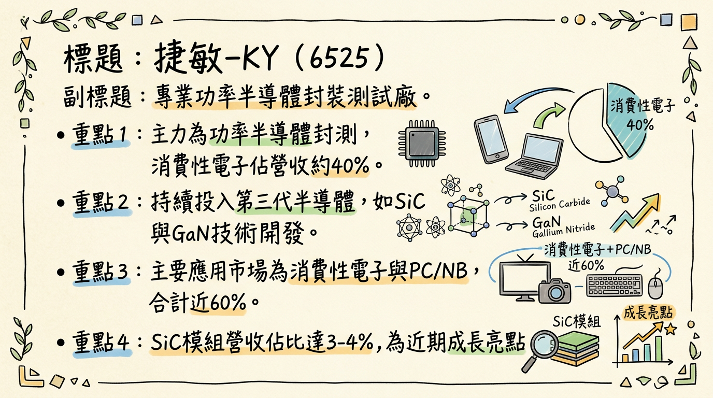
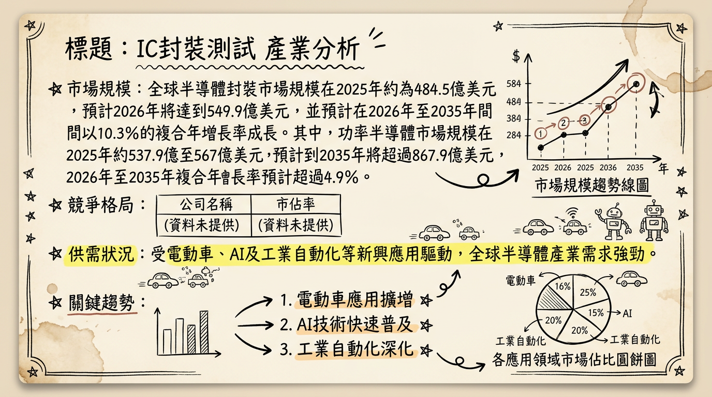
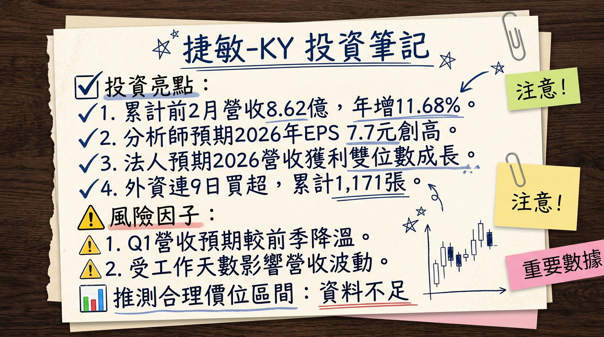

捷敏-KY (6525) 作為專業功率半導體封測廠，受惠於2026年車用、工控及AI相關功率元件需求強勁復甦，加上第三代半導體（SiC/GaN）技術佈局及IDM廠委外釋單趨勢，預期全年營收有望雙位數成長，法人估計2026年EPS上看7.7元，營運可望創歷史新高。
捷敏-KY 是一家專業的功率半導體（Power Semiconductor）封裝測試廠商，專注於提供高、低電壓功率金氧半場效電晶體（Power MOSFET）、絕緣柵雙極型電晶體（IGBT）和二極體等專業封裝測試服務。公司也提供功率模組（Power Module）封測服務，並持續投入第三代半導體技術開發，如碳化矽（SiC）模組和氮化鎵（GaN）技術。
製造基地與產能：捷敏-KY 的製造基地主要位於中國上海嘉定與安徽合肥，年總產能約為70億顆。
| 產品應用 | 營收比重 |
|---|---|
| 消費性電子 | 約40% |
| PC/NB | 約19% |
| 工業用 | 約18% |
| 車用電子 | 約13% |
| 通訊 | 約10% |
| 碳化矽（SiC）模組 | 約3-4% |
| 月份 | 金額 (新台幣億元) | 月增率 MoM | 年增率 YoY |
|---|---|---|---|
| 2026年2月 | 4.01 | -13.26% | 3.53% |
| 2026年1月 | 4.62 | 0.69% | 19.85% |
| 2025年12月 | 4.59 | 4.25% | 7.99% |
| 2025年11月 | 4.40 | 0.91% | 9.22% |
| 2025年10月 | 4.36 | -4.80% | 8.51% |
| 2025年9月 | 4.58 | -1.88% | 15.81% |
捷敏-KY 累計2026年前2月營收達新台幣8.62億元，年增11.68%，創同期新高。2月營收月減主因工作天數減少，但仍維持年增。
| 季度 | 季營收 (新台幣億元) | 毛利率 | 營業利益率 | EPS (元) |
|---|---|---|---|---|
| 2025年Q3 | 13.90 | 28.33% | 20.70% | 1.85 |
| 2025年Q2 | 13.87 | 28.89% | 22.08% | 1.80 |
| 2025年Q1 | 13.87 | 24.64% | 17.31% | 1.25 |
| 2024年Q4 | 12.01 (推估) | 22.70% | 13.98% | 1.81 |
| 年度 | 全年營收 (新台幣億元) | 年增率 YoY | EPS (元) | 備註 |
|---|---|---|---|---|
| 2024年 | 46.71 | - | 5.15 | 實際 |
| 2025年 | 53.26 | 14.03% | 5.6 - 6.0 | 自結/法人估 |
| 2026年(預估) | 挑戰雙位數成長 | ~10% | 7.7 | 今周刊預估 |
目前未有明確券商目標價報告，主要為法人及媒體對其獲利的預估。
| 資訊來源 | 日期 | 2025年EPS預估 (元) | 2026年EPS預估 (元) | 評等/評語 |
|---|---|---|---|---|
| MoneyDJ新聞 | 2026/01/07 | 5.0 - 6.0 | - | 坐穩5元、上看6元 |
| 元大證券 | 2026/01/30 | 5.6 - 6.0 | - | 約5.6~6元 |
| 今周刊 | 2026/02/13 | - | 7.7 | 期望值7.7元，創歷史新高 |
| 季度 | 毛利率 | 營業利益率 | 稅後淨利率 |
|---|---|---|---|
| 2025年Q3 | 28.33% | 20.70% | 17.20% |
| 2025年Q2 | 28.89% | 22.08% | 10.27% |
| 2025年Q1 | 24.64% | 17.31% | 15.14% |
| 2024年Q4 | 22.70% | 13.98% | 16.18% |
2025年以來毛利率呈現回升趨勢，主要受惠於稼動率從2024年第一季的55-60%提升至2025年第一季的近70%。隨著客戶庫存調整告一段落及回補潮湧現，營運穩步向上。公司持續投入高附加價值產品及第三代半導體技術開發，並拓展SiC模組業務，這些都有助於毛利率的提升。
| 季度 | 存貨週轉天數 | 應收帳款收現天數 |
|---|---|---|
| 2025年Q3 | 14.17天 | 64.80天 |
| 2025年Q2 | 12.85天 | 59.35天 |
| 2025年Q1 | 14.15天 | 65.56天 |
| 2024年Q4 | 16.31天 | 61.75天 |
近四季存貨週轉天數呈現下降趨勢，顯示存貨管理效率有所提升，未有異常堆積或備料現象。應收帳款週轉天數大致維持在60-65天左右，顯示帳款回收狀況穩定。
目前未找到2024-2026年具體的資本支出金額數據。公司持續擴增中國合肥廠產能，專注高電壓產品開發與生產，並計劃性擴充產品業務發展。此外，公司正在評估至東南亞設廠，期望在2024年底前有個決定性方向。截至2025年第三季累計，折舊費用為4.36億元，攤銷費用為0.011億元。
捷敏-KY秉持穩健的配息政策，過往填息率高，法人預期2026年配息將維持穩定水準。
捷敏-KY所屬的功率半導體封裝測試產業，受惠於電動車、AI及工業自動化等新興應用，正經歷顯著的成長與轉型。
* 2025年：約537.9億至568.7億美元。
* 2026年：預計達561.6億至599.8億美元。
* 2033年：預計增長至724.9億美元。
* 2035年：預計超過867.9億美元。
* 2026年至2035年複合年增長率（CAGR）：預計超過4.9% (另有預測2026-2031年CAGR達5.46%)。
* 2025年：約484.5億美元。
* 2026年：預計達549.9億美元。
* 2026年至2035年：預計以10.3%的複合年增長率成長。
* 2025年：470.9億美元。
* 2026年：預計達511.2億美元。
* 2026年至2031年：以8.56%的複合年增長率成長至771.2億美元。
* 2026年半導體市場將進入高需求與有限供應的競爭階段，尤其成熟製程元件供應限制將持續。
* 功率半導體產業正處週期性復甦，AI資料中心相關電源晶片仍供不應求。
* 2026年功率半導體行業平均毛利率預計為25.94%，研發佔比平均提升至8.43%。
* 中國新參與企業的價格競爭正擠壓整個供應鏈的利潤空間。
| 排名 | 公司名稱 | 國別/地區 | 2024年OSAT市場份額 |
|---|---|---|---|
| 1 | ASE Technology Holding (日月光投控) | 台灣 | 44.6% |
| 2 | Amkor Technology Inc. | 美國 | 15.2% |
| 3 | JCET Group (長電科技) | 中國 | 12% |
| 4 | Tongfu Microelectronics (通富微電) | 中國 | 8% |
| 5 | Powertech Technology Inc. (力成科技) | 台灣 | 5.5% |
捷敏-KY 專精於功率半導體封裝測試，涵蓋Power MOSFET、IGBT、二極體及功率模組，並積極開發SiC/GaN第三代半導體技術。相較於日月光、Amkor等大型OSATs，捷敏-KY雖規模較小，但在特定功率半導體領域（高電壓、大電流、高散熱要求）具備專業技術深度與高良率優勢，並受益於IDM委外釋單趨勢。大型OSATs則在先進封裝（如CoWoS、InFO）和廣泛晶片類型上具備更大規模和多元客戶基礎。
| 公司名稱 | 股號 | 2025年營收 (億元新台幣) | 2025年毛利率 (預估) | 2025年EPS (預估) | 2026年EPS (預估) |
|---|---|---|---|---|---|
| 捷敏-KY | 6525 | 53.26 (自結) | 24.64-28.89% | 5.6-6.0 | 7.7 |
| 日月光投控 | 3711 | 估計遠高於捷敏-KY | 20% | 未詳列 | 未詳列 |
| 京元電子 | 2449 | 未詳列 | 36% | 未詳列 | 未詳列 |
| 力成 | 6239 | 未詳列 | 16% | 未詳列 | 未詳列 |
| 欣銓 | 3264 | 未詳列 | 36% | 未詳列 | 未詳列 |
| 超豐 | 2441 | 未詳列 | 18% | 未詳列 | 未詳列 |
* 第三代半導體（SiC/GaN）普及：電動車滲透率攀升，SiC預計到2030年佔車用功率半導體市場60%。SiC模組在電動車動力系統、快充應用廣泛，GaN則受益於5G基地台高頻通訊需求。寬能隙（WBG）材料在高壓、高頻條件下表現優異。
* 先進封裝與異質整合：為滿足AI/HPC晶片對性能、功耗需求，2.5D/3D封裝、Chiplet架構、HBM整合成為關鍵。CoWoS產能供不應求，大型OSATs加速擴產。
* 工業4.0與汽車電子化：工業自動化推動節能、智慧型功率半導體需求。電動車與ADAS系統對高可靠性、高效率功率半導體（如SiC模組）需求顯著增長。
* 機會：
* 第三代半導體市場成長：SiC和GaN技術開發將直接受益於電動車、5G、再生能源對高效率寬能隙功率半導體的強勁需求。
* IDM委外釋單：IDM廠為優化成本、應對市場增長，擴大功率半導體委外封測，為捷敏-KY提供擴大營收的機會。
* 產業回溫與AI需求：2025-2026年消費性電子和車用電子復甦，疊加AI應用對電源管理晶片需求，帶來更多訂單。
* 威脅：
* 成本與價格競爭：功率半導體行業面臨持續的成本控制壓力及中國同業的價格競爭，可能擠壓利潤空間。
* 地緣政治風險：全球供應鏈受地緣政治緊張局勢影響，可能導致中斷或成本上升。
* 資本支出門檻：先進封裝需要龐大資本投入，對專業封測廠而言，可能難以與大型OSATs全面競爭所有先進技術。
* AI (人工智慧)：AI資料中心擴張推升電源供應元件、電壓調節器等功率半導體需求。
* 電動車：市場擴張是功率半導體（尤其SiC和GaN）主要驅動力，應用於逆變器、充電樁、ADAS系統。
* HPC (高效能運算)：與AI需求緊密相關，推動對先進封裝和相關功率半導體元件的需求。
* 5G通訊：5G基礎設施部署對GaN等高頻高效率功率半導體元件有強勁需求。
* 客戶地區拓展：客戶地區分布為台灣約40%、中國25%、日韓25%、歐美10%。
* PC/伺服器需求：PC、伺服器散熱相關功率元件訂單需求穩健，急單集中於散熱型產品，特別是伺服器風扇應用。
* 產能利用率：第一季稼動率已達近70%，較2024年同期55-60%顯著改善，預期下半年稼動率持續提升。
* AI應用持續增溫：AI帶動功率及相關IC供給吃緊，為捷敏-KY帶來穩健訂單需求。
* 產能擴充規劃：合肥廠持續擴增，專注高電壓產品。公司評估至東南亞設廠 (菲律賓、馬來西亞、泰國)，有望帶來長期產能彈性。
* 價格上漲機會：受功率半導體大廠漲價預期影響，捷敏-KY有望適度反映成本，提升毛利。
綜合以上分析，捷敏-KY 於2026年有望受惠於功率半導體產業的強勁復甦循環。
本報告由 AI 自動產生，資料來源為公開網路資訊，僅供參考，不構成投資建議。產生時間：2026-03-06 13:37


